绿带翠凤蝶
外号：森林皇后
点我翻面我的绿色不是颜料！
翅膀上蓝绿色的金属光泽，是鳞片上超级微小的结构把阳光“折”出来的，叫做结构色。
我是北京本土蝴蝶里的颜值担当，最爱停在高高的树梢上。
秋天的森林寄来一封邀请信
翅膀为什么会发光？松果是不是果子？哪种“板栗”千万不能吃？跟着依依的地图，完成 9 个小任务，领取你的小小博物学家证书！
小提示：点一点飘下来的叶子，你已经接住了 0 片秋叶
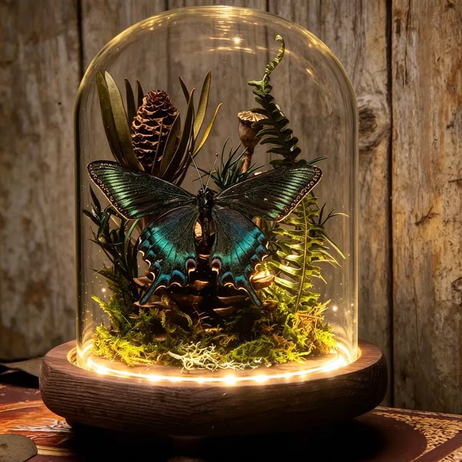
蝴蝶翅膀上那层“彩色粉末”，其实是成千上万片排得整整齐齐的小鳞片，就像屋顶上的瓦片。
把放大镜移到蝴蝶翅膀上（手机上用手指拖动），看看“粉末”到底长什么样？
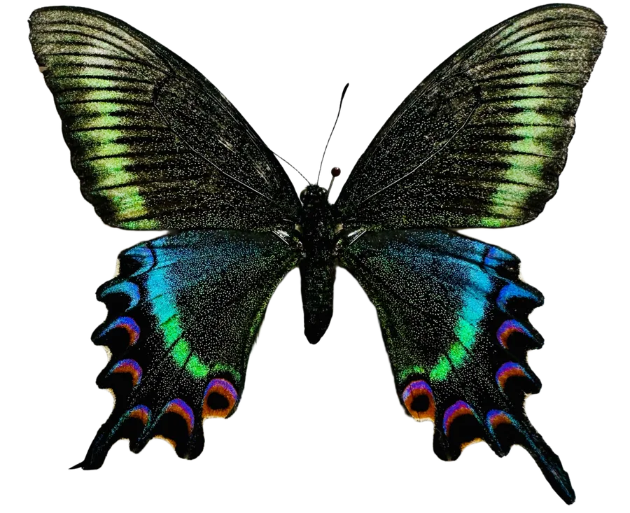
外号：森林皇后
点我翻面翅膀上蓝绿色的金属光泽，是鳞片上超级微小的结构把阳光“折”出来的，叫做结构色。
我是北京本土蝴蝶里的颜值担当，最爱停在高高的树梢上。
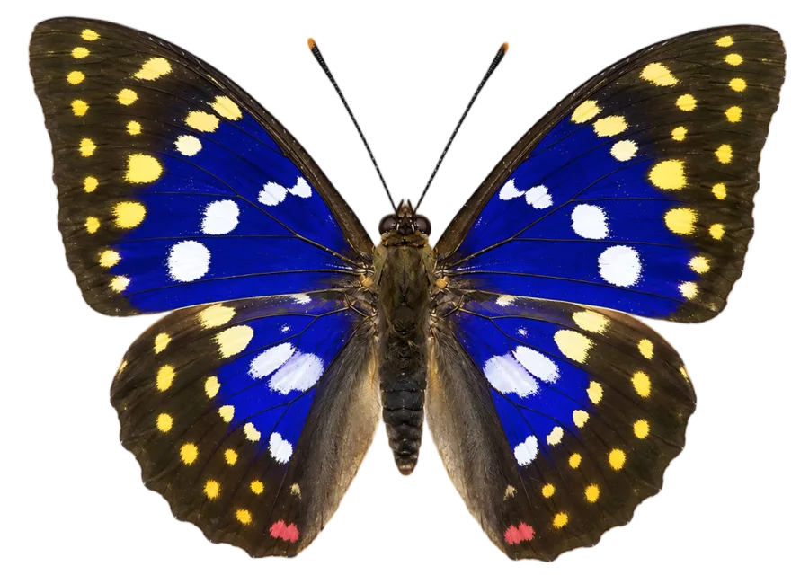
现在看到：华贵的深紫罗兰色
它是蝴蝶界的“变色龙”，还是个口味独特的美食家：不爱花蜜，偏爱发酵的树汁。（滑块变色是模拟效果）
一只枯叶蝶把自己伪装成了落叶，你能在 15 秒内找到它吗？
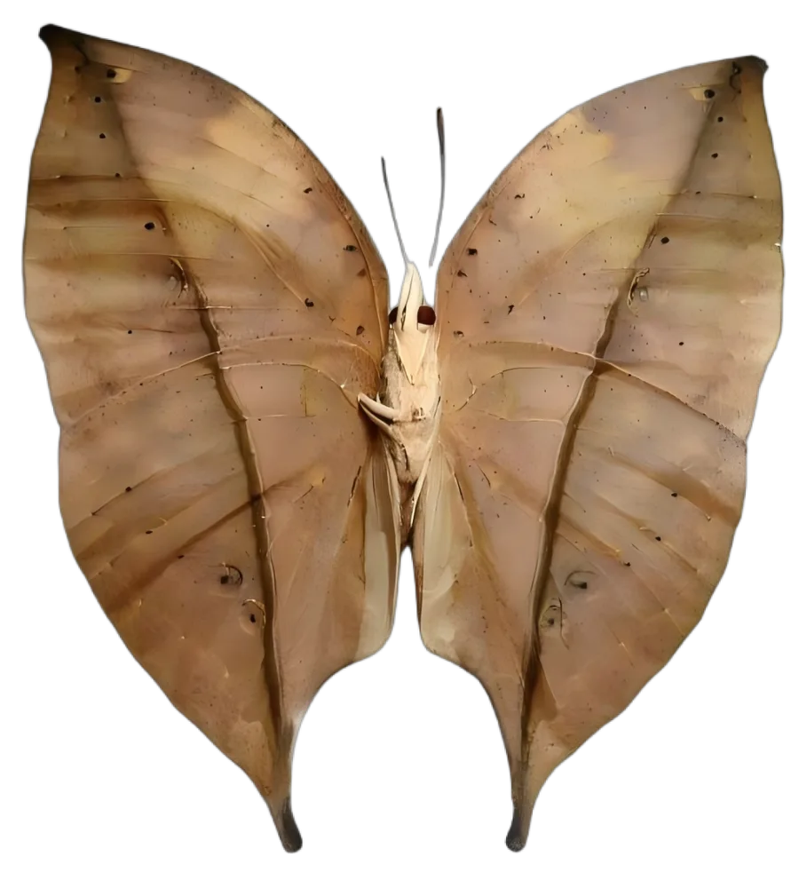
有只饿肚子的小鸟飞来了！快帮猫头鹰环蝶亮出翅膀上的“大眼睛”。
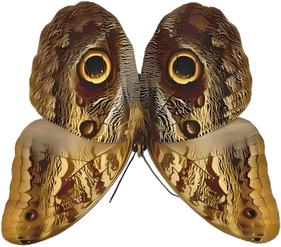
你知道吗？北美的帝王斑蝶每年要飞几千公里去过冬，比从北京飞到海南还远！
工具和材料全都准备好了，不用自己带。做完的作品可以直接抱回家！
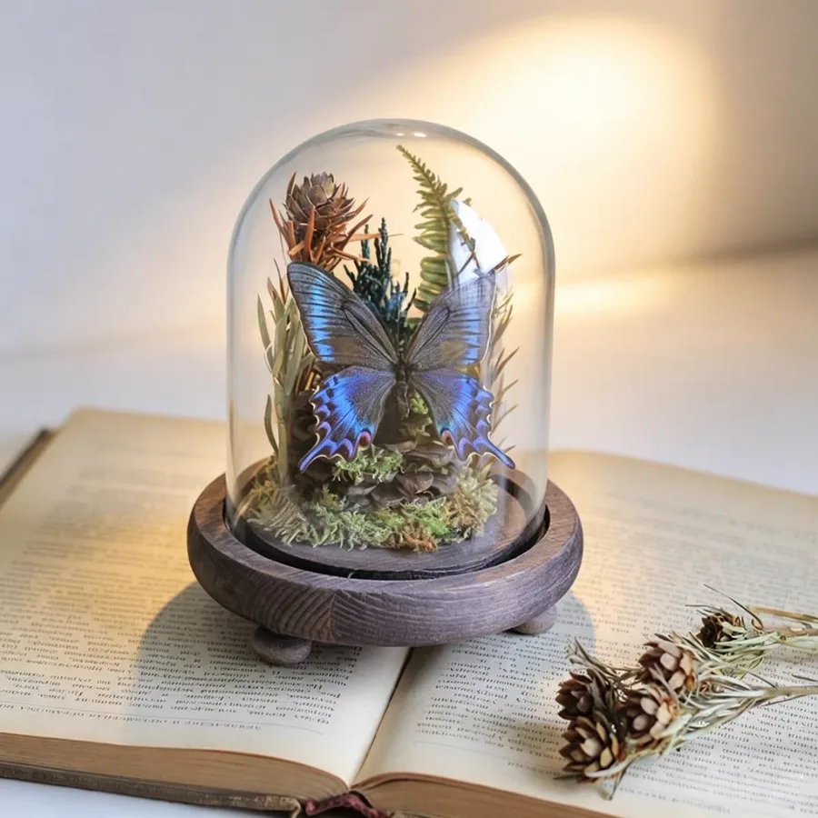
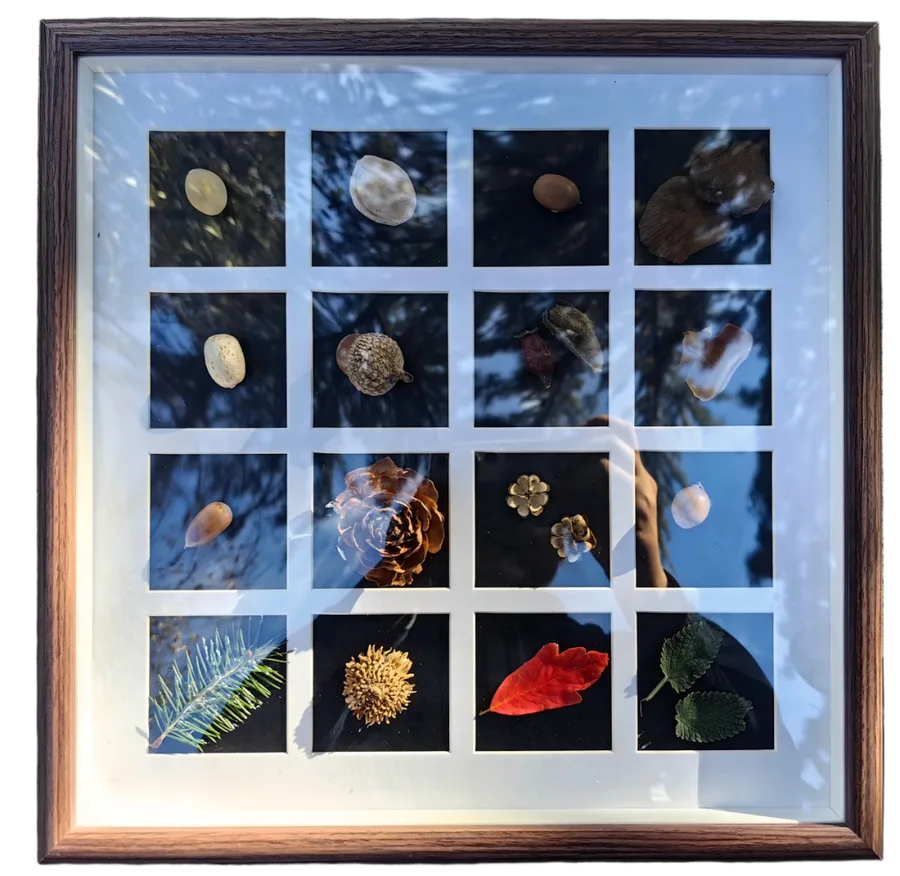
走在路上就能用的辨识秘籍，学完你就能对着地上的“宝贝”叫出它们的名字。
每个盒子里都有一种“果子”。全部拆开，找出那个其实不是果实的家伙！
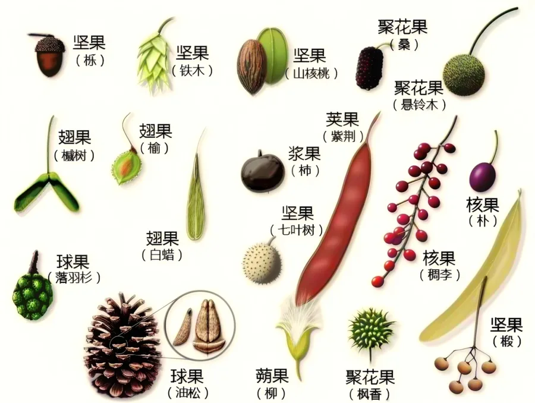
看叶子的样子，猜猜它是三兄弟里的谁？
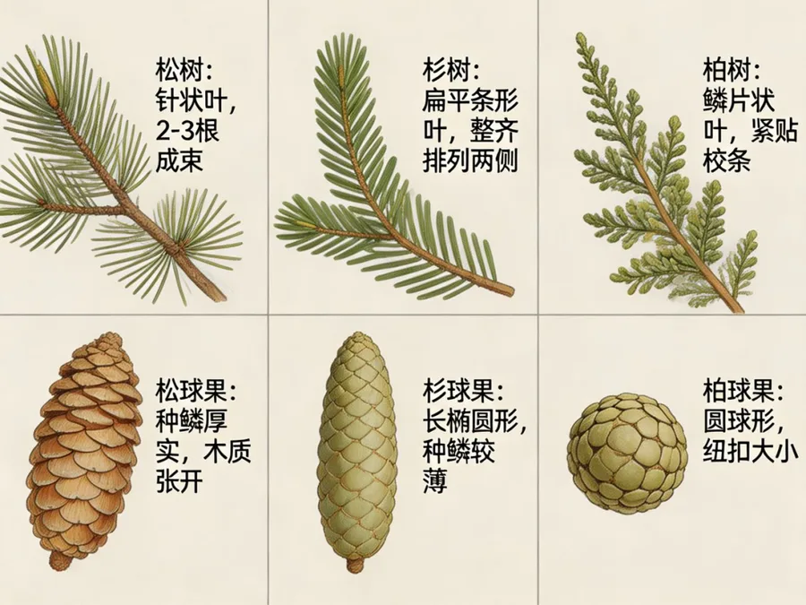
点一点橡子，摘下它的小帽子
橡子底部的杯状“小帽子”叫壳斗，所以它们的家族叫壳斗科。西山有栓皮栎、槲栎、槲树……每种橡子的帽子都不一样，是松鼠、花鼠过冬的“粮仓”。
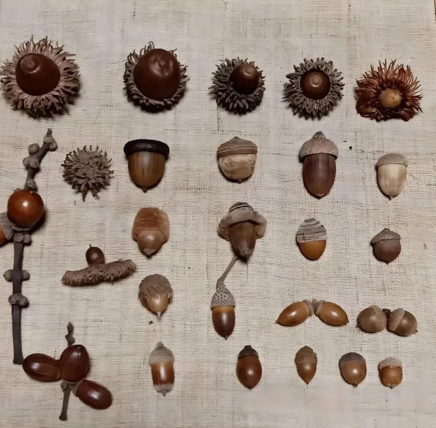
元宝枫的种子长着一对薄薄的翅膀（翅果），会像迷你直升机一样转着圈飞走。点“放飞”，看看能飞多远！
准备好了吗？风越大，飞得越远
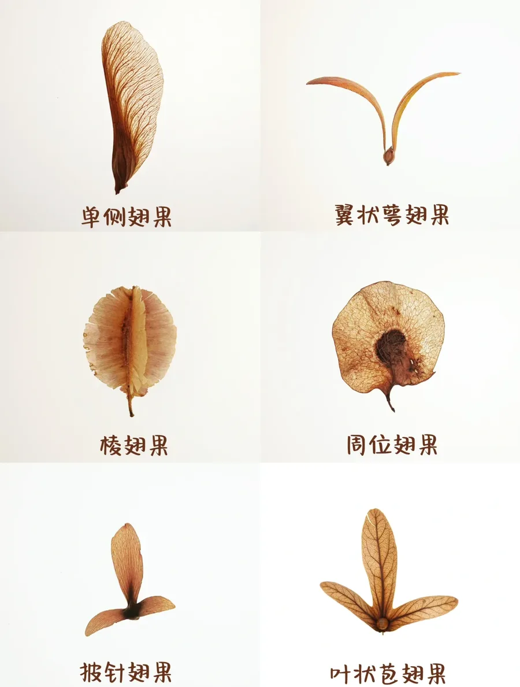
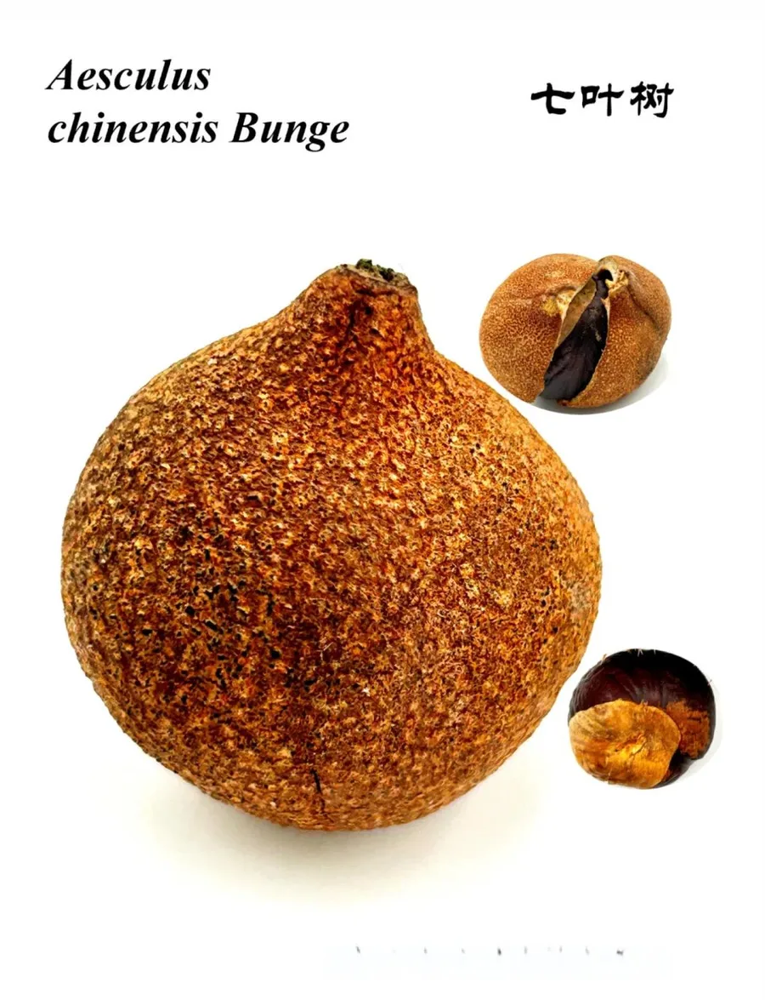
林子里捡到一颗圆滚滚、棕褐色、长得很像板栗的果子，能吃吗？
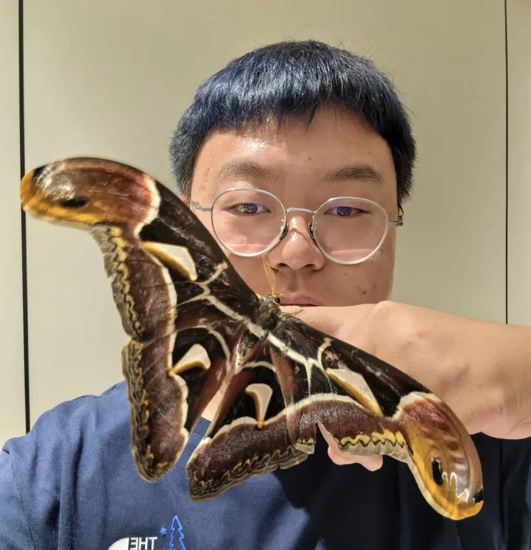
“热爱自然的人，对生活总是怀有敬意。”

微信添加「点点 | 西山拾光营地」
名额有限，先到先得。北京的秋天走得很快，别错过这一季！
恭喜 小探险家 完成全部 9 个西山秋日任务！你已经认识了结构色、拟态、壳斗和翅果，还记住了“不认识的果子不吃”。